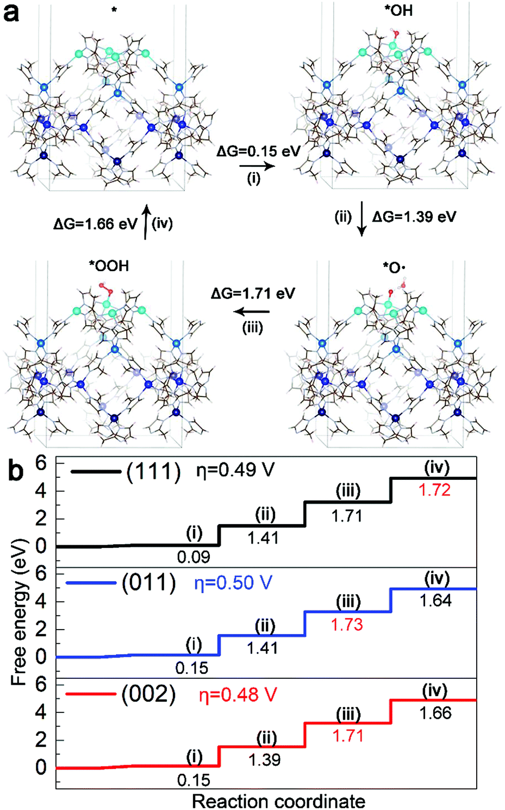
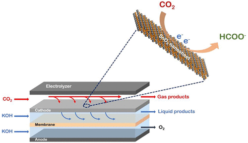
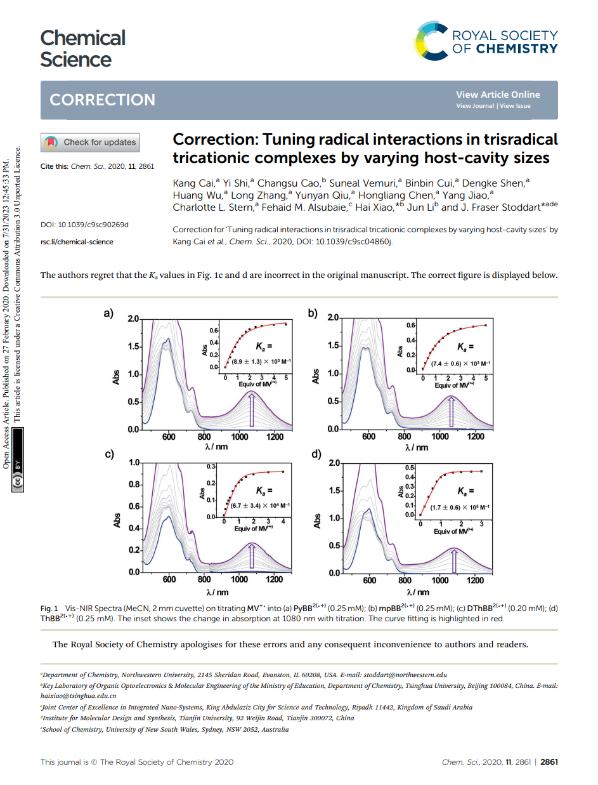

2020
- H.-Y. Zhuo&, X. Yu, Q. Yu, H. Xiao*, X. Zhang*, J. Li*
- Selective hydrogenation of acetylene on graphene-supported non-noble metal single-atom catalysts
- Science China Materials 2020, 63, 1741-1749

- J. Wan#, D. Liu#, H. Xiao*, H. Rong*, S. Guan, F. Xie, D. Wang*, Y. Li
- Facet Engineering in Metal Organic Frameworks to Improve Their Electrochemical Activity for Water Oxidation
- Chemical Communications 2020, 56, 4316-4319

- J. Li#, J. Jiao#*, H. Zhang, P. Zhu, H. Ma, C. Chen, H. Xiao*, Q. Lu*
- Two-Dimensional SnO2 Nanosheets for Efficient Carbon Dioxide Electroreduction to Formate
- ACS Sustainable Chemistry & Engineering 2020, 8, 4975-4982

- J.-C. Liu&, H. Xiao*, J. Li*
- Constructing High-Loading Single-Atom/Cluster Catalysts via an Electrochemical Potential Window Strategy
- Journal of the American Chemical Society 2020, 142, 3375-3383

- K. Cai, Y. Shi, C. Cao&, S. Vemuri, B. Cui, D. Shen, H. Wu, L. Zhang, Y. Qiu, H. Chen, Y. Jiao, C. L. Stern, F. M. Alsubaie, H. Xiao*, J. Li, J. F. Stoddart*
- Tuning radical interactions in trisradical tricationic complexes by varying host-cavity sizes
- Chemical Science 2020, 11, 2861-2861
